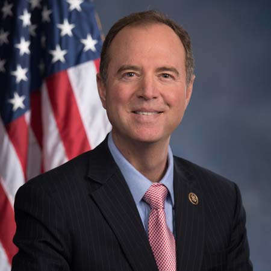

<div class="container">
	<div class="row">
        <div id="speaker-detail" class="col-lg-10 col-lg-offset-1">
            <div class="row">
            	<button title="Close (Esc)" type="button" class="mfp-close">×</button>
                
                <div class="col-md-5 col-lg-5 no-padding">
                    
                </div>
                    
                <div class="col-md-7 col-lg-7">
                    <h2>Adam <span>Schiff</span></h2>
                    <p class="lead">U.S. Representative</p>
                    <!--
                    <ul class="social list-inline list-unstyled">
                    	<li><a href=""><i class="fa fa-2x fa-facebook-square"></i></a></li>
                        <li><a href=""><i class="fa fa-2x fa-twitter-square"></i></a></li>
                        <li><a href=""><i class="fa fa-2x fa-google-plus-square"></i></a></li>
                        <li><a href=""><i class="fa fa-2x fa-linkedin-square"></i></a></li>
                    </ul>
                    -->
                    
                    <div id="content">
                    	<p>Since his election to Congress in 2000, Congressman Adam Schiff has been a consistent and effective voice for our community, country and kids. In Congress, Adam has focused on keeping our country safe, encouraging job and wage growth that is shared by everyone, protecting the civil rights of all Americans, and ensuring America is prepared to lead the world for the next century by supporting education and the sciences. Adam is the top Democrat, or Ranking Member, on the House Permanent Select Committee on Intelligence.</p>

<p>Adam currently represents the 28th Congressional District, which includes the cities of Glendale, Burbank, Pasadena, La Cañada, West Hollywood, and the communities of La Crescenta, Montrose, Sunland, Tujunga, as well as Silver Lake, Echo Park, Elysian Valley, Hollywood, Los Feliz and Griffith Park.</p>

<p>In Congress, Adam has distinguished himself as a leading voice on national security, where he has worked to protect our country and further our interests, while ensuring that our actions at home and abroad are in line with our values. Among his top priorities are growing the economy and creating good-paying jobs, expanding affordable educational opportunities from K-12 through college, fixing our broken immigration system, and protecting the environment and fighting climate change. Adam has also focused in Congress on the civil rights of all Americans, including fighting to ensure equal rights for LGBT Americans, and protecting voting rights. He has also fought against the corrosive influence of money in politics by introducing a Constitutional amendment to overturn the Citizens United decision.</p>

<p>In addition to his leadership position on the Intelligence Committee, Adam is a senior Democrat on leave from the Appropriations Committee. He previously served on the Judiciary and Foreign Relations Committees. Schiff is Chair of the Democratic Study Group on National Security, the founder and co-chair of the Congressional Caucus for Freedom of the Press, founder and co-chair of the Congressional Creativity and Theft-Prevention Caucus, Vice-chair of the Congressional Armenian Caucus, and a Vice-chair of the House LGBT Caucus.</p>

<p>Before he served in Congress, Adam worked as an Assistant U.S. Attorney in Los Angeles, and as a California State Senator representing many of the same areas he serves now in Congress.  A graduate of Stanford University and Harvard Law School, he and his wife Eve (yes, it’s true!) have 2 children, Alexa and Elijah. If you want to know more about Schiff’s current legislative activities, please visit his official congressional website at schiff.house.gov.</p>
                    </div>
                </div>
            
            </div>
        </div>
    </div>
</div>